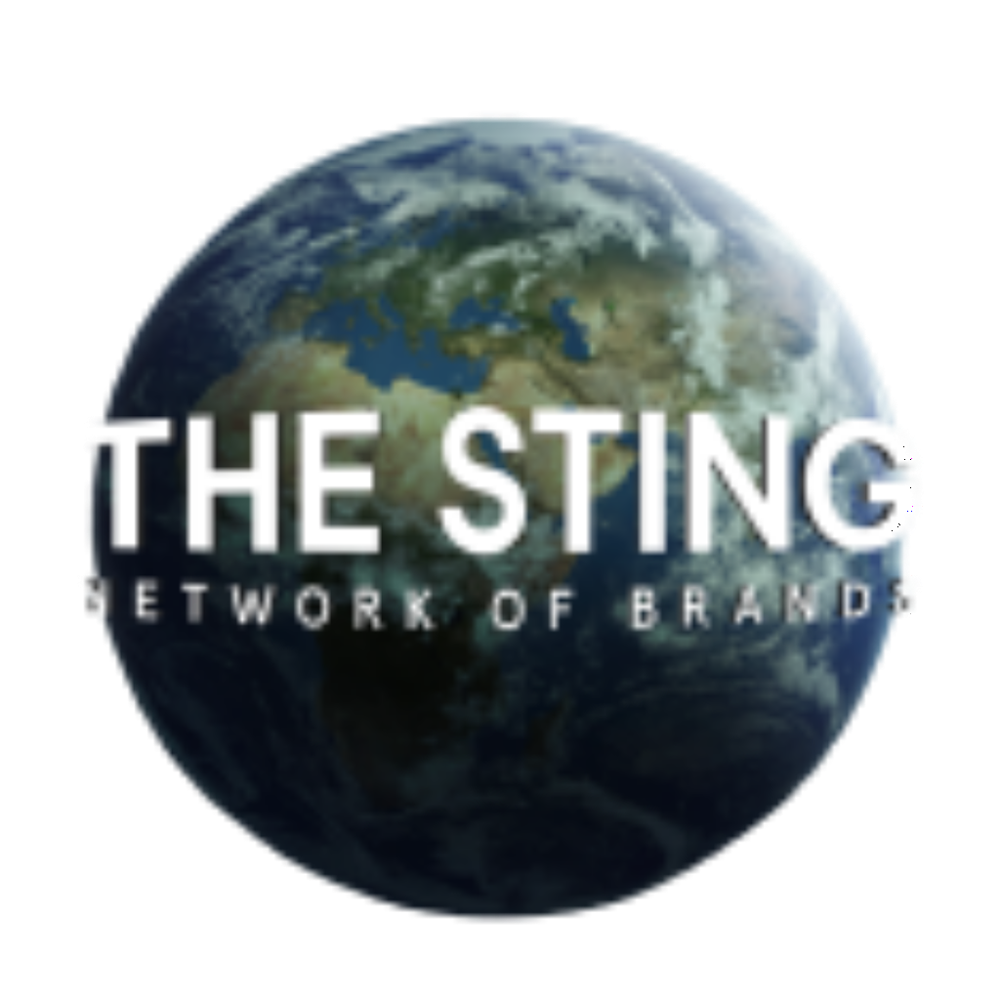

홈 > 브랜드 매거진 > The Sting
The Sting
더 스팅(The Sting)은 네덜란드의 대형 패션 소매기업이다.
산업 분야 리테일·커머스 · 공개 등급 자료 기반 · 브랜드 평가 4.1 ★

한눈에 보는 브랜드
더 스팅(The Sting)은 네덜란드 틸뷔르흐에서 1982년 헤르만 프란전이 헤우벨스트라트 매장으로 출발시킨 패션 소매 그룹이다. 상호는 1973년 동명 미국 영화에서 따왔다.
첫 번째 전환점은 2013년 자체 라벨 코스테스(Costes)를 독립 매장 브랜드로 분리한 멀티브랜드 다(多)포맷 전략이며, 두 번째는 2018년 무렵 독일·영국 등 해외 손실 점포를 정리하고 베네룩스 본거지로 회귀한 사업 재편이다. 현재 네덜란드와 벨기에에 오십여 개 점포를 운영하는 중견 소매 그룹으로 자리한다.
브랜드 관점
더 스팅의 본질은 한 매장 안에서 자체 라벨과 외부 브랜드를 함께 큐레이션해 파는 편집형 멀티브랜드 소매다. 단일 브랜드 직영점과 달리, 캐주얼부터 포멀까지 다양한 스타일을 한 공간에 묶어 젊고 패션 지향적인 고객에게 폭넓은 선택을 제공하는 것이 차별점이다.
전략적으로는 더 스팅이라는 백화점형 멀티브랜드 축과, 코스테스·코튼클럽·데일리 아에스테틱스·더 코프만 같은 독립 포맷 브랜드 축을 병행해 가격대와 타깃을 분산시키는 다포맷 구조를 택했다. 2016년 이후에는 침체에 대응해 더 젊은 세대를 겨냥한 신규 콘셉트와 옴니채널을 강화했고, 2018년 해외 철수로 베네룩스 집중 전략을 명확히 했다.
한국 독자 관점에서는, 직영 단일 브랜드 매장이 지배적인 국내 환경과 달리 유럽 중가 시장에서 멀티브랜드 편집숍이 어떻게 자체 라벨 개발과 결합해 생존하는지 보여주는 사례로 읽힌다.
시작과 성장
더 스팅이 태어난 1980년대 초 네덜란드는 전후 소비 성장이 성숙기에 접어들며 지방 도시마다 의류 전문점이 늘던 시기였다. 1982년 프란전은 직물 산업 도시 틸뷔르흐의 헤우벨스트라트에 의류 매장을 열고, 1973년 미국 영화 제목 더 스팅을 상호로 삼았다.
초기에는 남성·여성 의류를 다루는 일반 매장이었으나, 여러 브랜드를 한곳에 모아 파는 멀티브랜드 매장으로 성격을 굳혀 갔다. 첫 번째 큰 전환점은 2013년으로, 자체 브랜드 코스테스를 위트레흐트 아우데흐라흐트에 독립 매장으로 처음 선보이며 단일 포맷에서 다포맷 브랜드 하우스로 도약했다.
두 번째 전환점은 2012~2015년 해외 출점에서 누적된 손실을 정리한 2018년 무렵의 구조조정으로, 독일·영국 점포를 닫고 네덜란드·벨기에 본거지에 역량을 집중했다. 이후 코스테스는 2017년 안트베르펀·헨트 등으로 진출하며 사십여 개 규모로 성장했고, 그룹 전체는 베네룩스 중심의 다브랜드 포트폴리오로 확장되었다.
브랜드 아이덴티티
더 스팅의 정체성은 다양성과 큐레이션이다. 캐주얼 스트리트웨어부터 포멀웨어까지 폭넓은 스타일을 한 매장에 모아, 자기 취향을 조합해 완성하려는 젊고 트렌드에 민감한 소비자를 핵심 타깃으로 삼는다.
자체 라벨 디스트릭트 위민, 미스 아메리카, 리콰이어드, 로스트 마인즈 등을 외부 브랜드와 병치해 선택의 폭과 합리적 가격을 동시에 내세운다. 그룹 산하 코스테스·코튼클럽·데일리 아에스테틱스 등은 각기 고유한 정체성을 갖되, 접근 가능한 패션이라는 공통 가치를 공유한다.
브랜드 보이스는 과시적 럭셔리보다 일상에서 입을 수 있는 현실적이고 활기찬 톤에 가깝다.
제품과 서비스
취급 품목은 남성·여성·아동을 아우르는 의류와 액세서리이며, 자체 라벨과 외부 브랜드를 섞은 편집 구성이 특징이다. 채널은 베네룩스 전역의 오프라인 점포망과 더 스팅·코스테스 등 각 브랜드의 자체 웹숍을 결합한 옴니채널로, 2013년 이후 온라인 판매와 디지털 마케팅을 강화해 왔다.
현재 상태
본사와 물류센터는 네덜란드 틸뷔르흐에 있다. 지배구조는 창업자 헤르만 프란전과 사업가 로니 로젠바움이 지분을 절반씩 나눠 보유하는 형태로 알려져 있다.
사업 국가는 네덜란드와 벨기에 중심의 베네룩스이며, 한때 추진한 해외 진출은 2018년 무렵 대부분 철수했다. 현재 더 스팅·코스테스·코튼클럽·데일리 아에스테틱스·더 코프만 등 다수 포맷을 운영하는 베네룩스 패션 소매 그룹으로 활동 중이다.
매출·종업원 수 등 세부 재무 수치는 출처마다 편차가 커 미공개로 둔다.
타임라인
정리된 연도형 이벤트가 없습니다.
BI/CI 변천사
함께 읽을 브랜드
 리테일·커머스 · 자료 기반Van Leest
리테일·커머스 · 자료 기반Van LeestVan Leest는 네덜란드의 리테일·커머스 브랜드로, 상품 큐레이션, 가격 체계, 매장·온라인 유통, 구매 편의성이 브랜드 인식을 좌우하는 영역입니다.
 리테일·커머스 · 디렉토리무신사
리테일·커머스 · 디렉토리무신사무신사는 한국 패션 플랫폼 브랜드입니다. 온라인 패션 커머스, 브랜드 입점, 자체 콘텐츠, 오프라인 스토어를 통해 국내 디자이너 브랜드와 젊은 소비자를 연결합니다.
 리테일·커머스 · 자료 기반롯데백화점
리테일·커머스 · 자료 기반롯데백화점롯데백화점은 롯데쇼핑이 운영하는 대한민국의 대표 백화점 브랜드다. 1979년 서울 소공동 본점을 열었으며 국내 백화점 업계 1위로 최다 점포망을 갖췄다.
 리테일·커머스 · 자료 기반풀앤베어
리테일·커머스 · 자료 기반풀앤베어풀앤베어(Pull&Bear)는 젊은 층을 겨냥한 스페인의 패스트패션 캐주얼 의류 브랜드이다.
 리테일·커머스 · 매거진 완성유니클로
리테일·커머스 · 매거진 완성유니클로유니클로는 패션을 유행의 장식이 아니라 생활을 구성하는 공산품처럼 다룬다. 브랜드의 힘은 화려한 스타일보다 베이직, 품질, 가격, 운영 시스템을 일관되게 정렬하는 데...
Be
Best of the Bone
리테일·커머스 · 편집 검수Best of the BoneBest of the Bone는 2025년에 기록된 Shoppy Shop Brands 계열의 브랜드 아이덴티티 사례입니다. Universal Favourite가 아이...
NO
노브랜드
리테일·커머스 · 자료 기반노브랜드노브랜드(No Brand)는 이마트가 운영하는 가성비 중심의 자체 브랜드(PB)다.
리테일·커머스 · 자료 기반BelCompany벨컴퍼니(BelCompany)는 네덜란드의 통신·휴대폰 소매 체인이었다. 한때 네덜란드 최대 통신 소매 중 하나였으나 2011년 보다폰에 인수돼 보다폰 매장으로 전환...